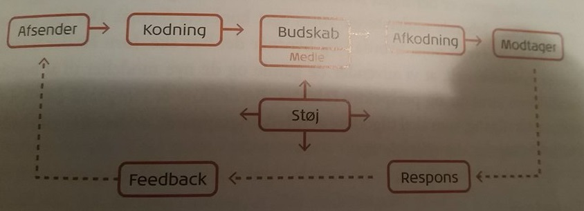

Mediesociologi kan beskrives som et felt inden for research.
Sociologi handler i sig selv om forholdet mellem individ og samfund.
Om individets forhold til sin næreomverden og om forholdet til samfundets upersonlige faktorer(Statens politiske magt og den globale verden).
Det humanistiske paradigme kaldes også interaktionsparadigmet, fordi det grundlæggende er optaget af interaktion mellem mennesker og opfatter mennesket som aktivt og behovsstyret. Fokus ligger på modtageren. Modtageren ses som aktiv og medskabende.
De dominerende videnskabsteoretiske retninger inden for paradigmet er hermeneutikken, fænomenologien og den symbolske interaktionisme.
Alt menneskeligt interaktion bygger på kommunikation.
Man undersøger det unikke snarer end det generelle, selvom man udleder generelle antagelser på baggrund af få, men dybe undersøgelser.
Man arbejder ikke udfra en årsag-virkning-sammenhæng, men antager at modtagerens oplevelser er situationsbestemt.
Er en klassiker i dansk kommunikationsundervisning. IMK står for International Markeds Kommunikation.
IMK modellen bygger på, at kontekst/kultur, medier og genre er med til at forme teksten.
Afsender og modtager er ligeværdige bidragsydere. Det betyder, at der ikke er nogen kommunikation, før modtageren deltager.
Det kommunikative formål set fra både afsender- og modtagersiden.
Trækstrukturer, der her forstås som de sproglige træk, der hver især er med til at opfylde en teksts kommunikative formål.
Retoriske strategier, som er de mangeartede virkemidler, der anvendes, for at trækkene står tydelige, og som kan være både verbalsproglig og visuel art.
Modellen er anvendelig i både produktions- og analysesammenhæng og bygger bro mellem de forskellige fagområder og discipliner, der skal spille sammen, når man skal skabe et nyt website i et produktionsteam.
Meningen med modellen er at præsentere et samlet redskab, som både forklare de visuelle/æstetiske og de funktionelle aspekter af webkommunikation.
Den faktiske modtager kan derimod ikke fremanalyseres ved hjælp af produktet, men udelukkende gennem en konkret receptionsanalyse.
En receptionsanalyse kan foretages på flere niveauer:
Har fokus på afsenderen og dennes placering i omverdenen. Afsenderen er set som den styrende i kommunikationsprocessen. Paradigmet præges af en forståelse af kommunikation og transmission.
Det samfundsvidenskabelige paradigme er i forhold til det humanistiske paradigme overvejende karakteriseret ved en højere grad af tro på, at verden er forudsigelig, og at man kan planlægge med udgangspunkt i stabile omgivelser og faste strukturer.
Paradigmet arbejder med modeller og teorier, der, som kritikere gør opmærksom på, har op mod næsten 100 år på bagen. For at opbygge viden i det samfundsvidenskabelige paradigme anvendes ofte undersøgelsesmetoder, som kan give svar på målbare data som hvor mange eller hvor meget.
Afsenderen er genstand for den største interesse, og hovedformålet er at kunne forudsige.
Kommunikationen er underlagt støj og kan være af såvel teknisk som fortolkningsmæssig karakter.
 Kilde: Christiansen, Hans-Christian & Rose, Gitte B. 2017. "Online Kommunikation - En Introduktion"